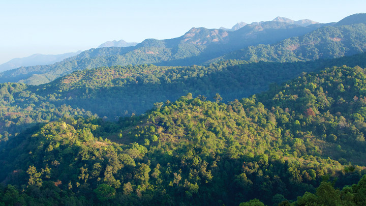
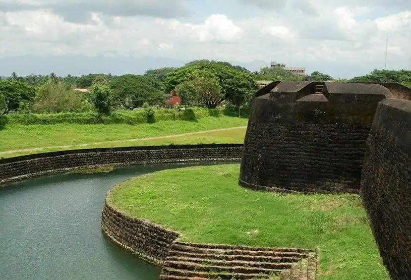
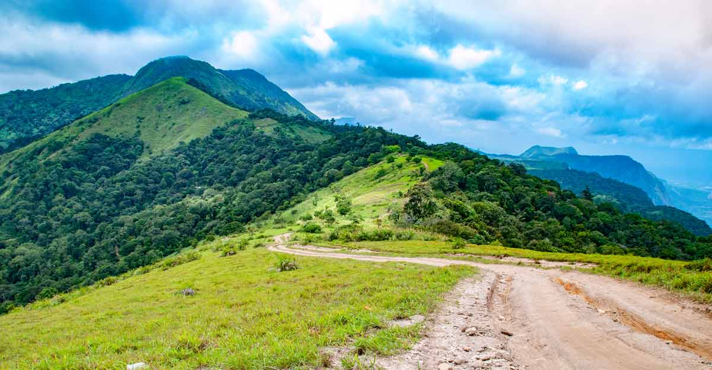

1. Malampuzha Dam & Gardens
At a distance of 9 Kms from Palakkad Railway Station, Malampuzha Dam is a large irrigation dam built on Malampuzha River, a tributary of Bharathapuzha River at the base of the hills of the Western Ghats. The reservoir provides drinking water to Palakkad town.
There is a beautiful well laid garden near the Dam. There are lush green lawns, innumerable flower beds, glittering pools, fountains and avenues. There is a fresh water aquarium, Snake Park and a Children's park with a toy train. The Garden house has a unit of Water sports also. The imposing concrete sculpture of YAKSHI, the passenger ropeway, first of its kind in South India, offers adventurous and delightful air journey of 20 minutes across the garden are added attractions of the park. A telescopic tower, the first rock garden and the first amusement park of Kerala Fantasy Park are also located at Malampuzha. The reservoir has boating and fishing facilities.
Timings: 9 AM to 8 PM. Ropeway
Timings: 10 AM - 1 PM & 2:30-8 PM.

2.Silent Valley National Park
At a distance of 53 km from Palakkad, & 102 km from Coimbatore, Silent Valley National Park is a national park located in the northeast corner of Palakkad district in Kerala. It is one of the famous national parks in Kerala, and among the top Palakkad tourist places.
Silent Valley National Park is a beautiful representation of the last remaining rain-forest of Kerala. Historically it is a paradigm of people's movement to protect the forest. In 1914, Silent Valley forests were declared as Reserved Forest. It was declared as National Park in 1984 and formally inaugurated in the year 1985. Till 1921, Silent Valley was part of the South Malabar Forest Division with headquarters at Nilambur. In 1921, it came under the control of the Palakkad Forest Division and managed so until 1988.
Silent Valley was called 'Sairandhrivanam' as it was the place where Sairandhiri (the secret identity donned by Panchali, from the epic Mahabharata) hid along with her five husbands, the Pandavas, during their exile. The Kunthippuzha River which feeds the entire forest was named after Kunthi, the mother of the Pandavas.
Initially, the park has only 89.52 sq. km area that forms the core zone of the National Park while in 2007, an area of 148 sq. km was added to this as a buffer zone. It is one of the smallest national parks in India and among the must-include places in Palakkad sightseeing packages. The altitude of the park varies between 658 to 2383 meters. It is shielded by the Nilgiri Plateau to the North and the Mannarkkad Plains to the South. It constitutes the centerpiece of the Nilgiri Biosphere Reserve, sanctified as a World Heritage Site by UNESCO in 2012.
This is one of the best places of wildlife near Coimbatore. The park provides shelter for a variety of species including elephants, tigers, leopards, wild boar, sambhar, gaur, and the endangered lion-tailed macaque. Along with them, one can view over 1000 species of flowering plants and another 110 species of orchids here. Over 400 species of moths and 200 species of butterflies have been cataloged here.
The Silent Valley core zone has National Park status while the buffer area has Reserve forest status. The headquarters of both ranges are at Mukkali and the Divisional office is at Mannarkkad. The National Park along with the buffer zone is a part of Nilambur Elephant Reserve declared under Project Elephant. Mukkali (on Mannarkad-Anaikatti-Coimbatore road) is the entry point to the park where private Jeeps are found to get into the park (guides are also available here). Vehicles are allowed till Sairandhri watchtower (23 km from Mukkali).
Visitors can trek to the Kunthi River from the watchtower (1.5 km).

3.Palakkad Fort
At a distance of 2 km from Palakkad Railway Station, Tippu's Fort is an ancient fort situated in the heart of Palakkad town in Kerala. It is one of the best preserved heritage forts in Kerala, and among the must-visit places during Palakkad trip.
Also known as Tipu's Fort, Palakkad Fort is believed to have existed since ancient times, but the present form of the fort was constructed by the great ruler of Mysore, Haider Ali in 1766 AD. Named after Hyder's son Tipu Sultan, it was under the Mysore rulers until the British took control of the place in the year. Later, it was converted into a taluk office in the early 1900s. Now, the fort is protected & managed by the Archeological Survey of India.
Spread over an area of 60,702 sq. m, Palakkad Fort is immensely famous for its architecture, which displays the efficiency of the French craftsman. This square-shaped fort is supported by walls and bastions. Earlier, the entrance to the fort was via a drawbridge, which has now been replaced by a permanent one in its place. There is a large ground between the Fort and the Palakkad Townhall, known as Kota Maidanam which is now used to stage cricket matches, exhibitions, and public meetings.
An open-air auditorium called Rappadi is also located within the spacious grounds of the Fort.
The Palakkad Fort also houses some other smaller attractions such as the Hanuman temple, Martyr's column, Anjaneya Swami Temple, Vatika Shilavatika (a garden), and a sub-jail.
The fort is considered one of the famous Palakkad sightseeing places.

4.Dhoni Waterfalls
A three-hour trek from the base of the Dhoni hills will take you to the pristine beauty of nature and the lush green surroundings will rejuvenate your senses. The trekking starts at the foot of the hills near the Teak plantations.
A narrow mountain way is there for four-wheel drives and bikes that lead up to the waterfall; however private vehicles are prohibited from traversing these roads. This 4 km long trekking trail through the lush green environs bestows one with a quiet isolated space to witness nature in its most tranquil form. This guided trek is best to start trekking early mornings, so more time can be spent in the company of the gorgeous waterfall.
The waterfalls are full during monsoon and it overflows with beautiful small streams gushing down, so the best time to visit is during monsoon (June – October). Bathing in the waterfall is not allowed, though there are places down the stream for bathing. The return journey is comparatively easy lasting usually around 2 hours.

5.Nelliampathy Hills
At a distance of 60 km from Palakkad, 75 km from Pollachi, 75 km from Thrissur & 105 km from Coimbatore, Nelliyampathy, also spelled as Nelliampathi, is a charming hill town in Palakkad district of Kerala. The Nelliyampathy hills and mountains form a part of the Sahyadri ranges in the Western Ghats. These hills are located in the Tamil Nadu - Kerala border sharing border with Palakkad district of Kerala and Coimbatore district of Tamil Nadu.
Nelliyampathy is one of the less explored hill stations of Kerala which has an elevation ranging from 467 m to 1572 m. It is also an ideal weekend getaway from Coimbatore city. The green sprawling Nellikota Mountain ranges which is anchored at a height of 1572 m is the highest peak in the region. Covered with valleys and green forests, the mountain range of Nelliyampathy has several tea, coffee and cardamom plantations. The extensive expanses of plantations offer unique opportunities of plantation tours here.
Nelliyampathy hills are exclusively famous for their exquisite fauna and green dense forests with many wild animals like Monkey, Deer, Porcupine and Elephants. Parambikulam Wildlife Sanctuary, Nelliyampathy Hill, Shimmering Pothundi Reservoir, Padagiri, Palagapandi Estate and Pothundi Reservoir are the famous sightseeing places in Nelliampathi. Pothundi Dam, which was constructed in the 19th century, is the entrance to Nelliyampathy. A viewpoint called Seetharkund is situated 8 km away from Nelliyampathy. Another attraction of Nelliyampathy is Kesavampara Viewpoint.
Nelliyampathy also offers great opportunities for trekkers and adventure enthusiasts. Mampara is a great trekking point. Trekkers can also visit Kaikatty, which serves as a base camp for several adventure activities. The hills of Nelliyampathy also make it a great spot to get a good view of the Sholayar Pass. Parambikulam, Malampuzha Gardens, Raja's Cliff and the wildlife sanctuary are other places of interest here.
The best time to visit Nelliyampathy is from September to May. Nelliyampathy is very well connected by road from Coimbatore and Palakkad though the frequency of these services is less. Privately owned hotels and resorts provide many accommodation options in Nelliyampathy.